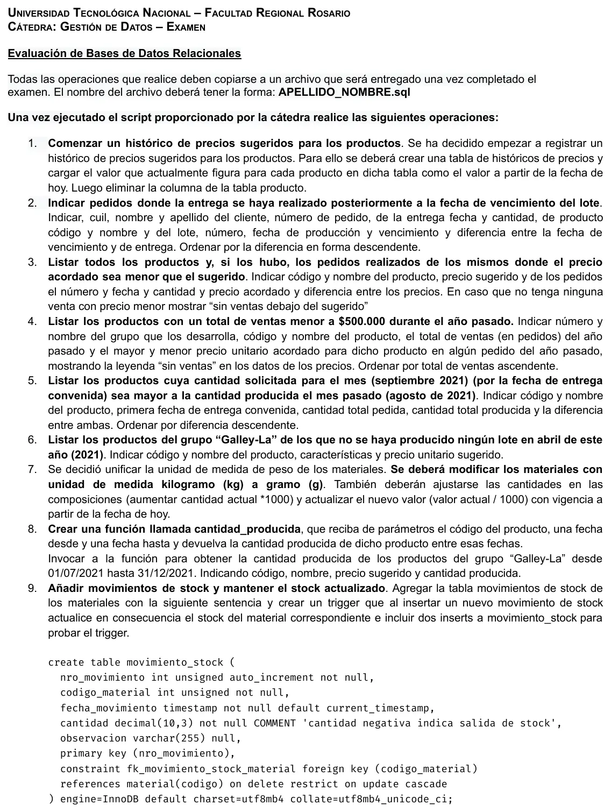
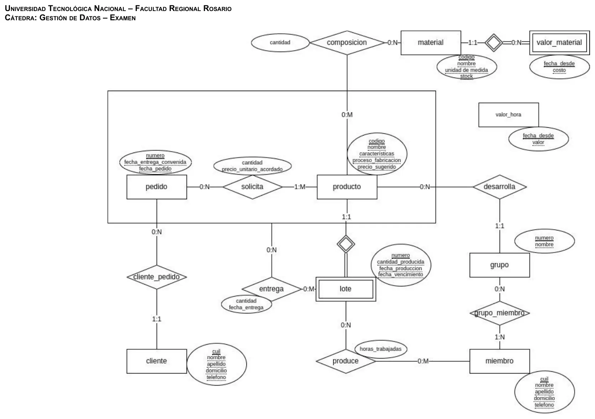
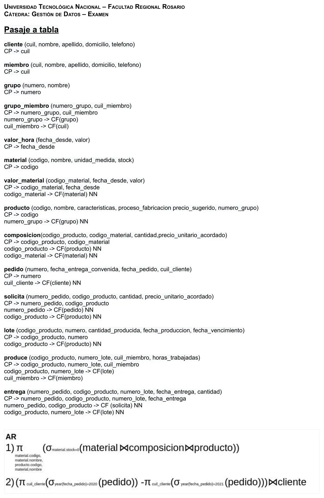

Cooperativa Sustentable
Final
Enunciado


Evaluación de Modelos de Datos y Álgebra Relacional
Modelos de Datos
- a) Esquematice el modelo E-R que se deriva de la narrativa.
- b) Transforme el modelo E-R en un Modelo Relacional (pasaje a tablas), indicando los atributos de cada tabla indicando aquellos que pueden admitir valores nulos, indique las claves primarias y foráneas, en estas últimas indique, cuando se requiera, si admiten o no valores nulos.
Operaciones del Álgebra Relacional
- c) Desarrolle las operaciones en Álgebra relacional de los Requerimientos planteados.
La cooperativa de trabajo para desarrollo sustentable Shiganshina nos contactó para confeccionar un sistema que permita organizar el trabajo de sus distintos grupos. La cooperativa sólo realiza la fabricación y comercialización de productos(1) sustentables.
La cooperativa se organiza en grupos(4) de producción, formados por miembros(6) de la cooperativa para realizar la fabricación. Para evitar competencia interna cada producto que se comercializa corresponde a un único grupo que es responsable de desarrollar el proceso de fabricación y de conseguir los materiales(3) necesarios.
Todos los productos se fabrican por lotes(7). Las decisiones de la fabricación de los mismos (por ejemplo fabricar sólo bajo pedido o no, tamaño del lote, momento de fabricación y cantidad de lotes) son responsabilidad del grupo que desarrolla el producto y pueden variar de producto en producto y a lo largo del tiempo por lo cual no se realiza ningún seguimiento de esto, sólo de los datos de los lotes y sus entregas.
En cuanto a la comercialización los productos cuentan con un precio sugerido actualizado pero se puede negociar con los clientes(10) un precio diferente. Finalmente cuando el cliente realiza un pedido(11) se registran los productos, cantidad y precios acordados. Una vez realizado el pedido se pueden realizar una o más entregas(12) para cada producto del pedido debiéndose registrar todos los datos de las mismas por trazabilidad.
Reglas de Negocio
- Los productos se identifican por un código único, a los mismos se les define un nombre y del mismo se registran las características para ofrecerlos a los clientes, las instrucciones del proceso de fabricación y precio sugerido actual. También se registran los materiales(3) que se utilizan para su fabricación y la cantidad de los mismos que se utiliza para la producción de una unidad y el grupo(4) que fabrica el producto.
- Cada producto se asigna a un único grupo(4) para su desarrollo, para evitar competencia interna. Pero un grupo puede desarrollar múltiples productos.
- Los materiales se identifican por un código único, tienen un nombre, una unidad de medida y una cantidad en stock. De los mismos también es necesario mantener un histórico del costo de los mismos.
- Los grupos de producción son numerados secuencialmente y se les da un nombre para simplificar su identificación.
- Los grupos se componen de varios miembros(6) (todos los que deseen formar parte del mismo). Un miembro puede formar parte de varios grupos.
- Los miembros son identificados por su cuil y de los mismos se registra, nombre, apellido, domicilio y teléfono. Los mismos pueden formar parte de varios grupos de producción.
- Los lotes dependen del producto y se identifican con un número secuencial que depende del producto. Además debe registrarse cantidad producida, fecha producción, fecha de vencimiento.
- Los lotes son producidos por uno o más miembros(6) de la cooperativa. Se deben registrar los miembros de la cooperativa que participaron en la producción de cada lote así como la cantidad de horas totales que trabajó cada uno de ellos para cada lote para determinar el costo de mano de obra(9).
- La cooperativa asigna un costo por hora de mano de obra que es el mismo para todos los miembros y no depende de cada uno. Debe llevarse un histórico del mismo.
- Los clientes se identifican por su cuil y se registra nombre, apellido, domicilio y teléfono.
- Los pedidos son identificados por un número único y secuencial. De los mismos se registra fecha de pedido, fecha de entrega convenida y por cada producto del pedido se registra la cantidad pedida y el precio de venta convenido para este pedido.
- Para cada producto del pedido se pueden realizar una o más entregas hasta cumplir con la cantidad pedida. De cada entrega debe registrarse el/los lotes(7) al cual/cuales corresponde, la cantidad entregada y la fecha de entrega. Dentro del mismo lote pueden hacerse varias entregas en distintas fechas.
- Es fundamental para la cooperativa poder saber exactamente de qué lotes fueron las entregas de cada producto de un pedido.
Requerimientos de información
- Listar todos los materiales con cantidad en Stock 0. Indicar los código y nombre del material y código y nombre de los productos donde se los utiliza.
- Clientes que realizaron pedidos en 2020 pero no lo han hecho en 2021. Listar todos los datos del cliente.
Resolución
Ver la resolución: DER, pasaje a tablas, álgebra y SQL
Son las hojas originales. Tocá una para verla en grande.




SQL
# SQL 1
## Enunciado
/*
Comenzar un histórico de precios sugeridos para los productos. Se ha decidido empezar a registrar un histórico de precios sugeridos para los productos. Para ello se deberá crear una tabla de históricos de precios y cargar el valor que actualmente figura para cada producto en dicha tabla como el valor a partir de la fecha de hoy. Luego eliminar la columna de la tabla producto.
*/
## Resolución
create table precio_sugerido (
codigo_producto int unsigned not null,
fecha_desde date not null,
precio_sugerido decimal(10,3),
primary key (codigo_producto, fecha_desde),
constraint fk_precio_sugerido_producto foreign key (codigo_producto)
references producto(codigo) ON DELETE RESTRICT ON UPDATE CASCADE
) engine=InnoDB default charset=utf8mb4 collate=utf8mb4_unicode_ci;
insert into precio_sugerido
select p.codigo, current_date, p.precio_sugerido
from producto p;
alter table producto
drop column precio_sugerido;
# SQL 2
## Enunciado
/*
Indicar pedidos donde la entrega se haya realizado posteriormente a la fecha de vencimiento del lote. Indicar, cuil, nombre y apellido del cliente, número de pedido, de la entrega fecha y cantidad, de producto código y nombre y del lote, número, fecha de producción y vencimiento y diferencia entre la fecha de vencimiento y de entrega. Ordenar por la diferencia en forma descendente.
*/
## Resolución
select c.cuil, c.nombre, c.apellido
, e.numero_pedido, e.fecha_entrega, e.cantidad
, prod.codigo, prod.nombre
, l.numero, l.fecha_produccion, l.fecha_vencimiento
, datediff(l.fecha_vencimiento, e.fecha_entrega) retraso
from entrega e
inner join lote l
on e.codigo_producto=l.codigo_producto
and e.numero_lote=l.numero
inner join pedido p
on p.numero=e.numero_pedido
inner join cliente c
on p.cuil_cliente=c.cuil
inner join producto prod
on l.codigo_producto=prod.codigo
where e.fecha_entrega > l.fecha_vencimiento
order by retraso desc;
# SQL 3
## Enunciado
/*
Listar todos los juguetes y, si los hubo, los pedidos realizados de los mismos donde el precio acordado sea menor que el sugerido. Indicar código y nombre del producto, precio sugerido y de los pedidos el número y fecha y cantidad y precio acordado y diferencia entre los precios. En caso que no tenga ninguna venta con precio menor mostrar “sin ventas debajo del sugerido”
Nota: Los juguetes son aquellos productos que tienen la palabra juguete en su nombre.
*/
## Resolución
select prod.codigo, prod.nombre, prod.precio_sugerido
, ifnull(pe.numero,'sin ventas debajo del sugerido')numero_pedido, ifnull(pe.fecha_pedido,'sin ventas debajo del sugerido') fecha_pedido
, ifnull(sol.cantidad,'sin ventas debajo del sugerido') cantidad, ifnull(sol.precio_unitario_acordado,'sin ventas debajo del sugerido') precio_acordado,
ifnull(prod.precio_sugerido - sol.precio_unitario_acordado,'sin ventas debajo del sugerido') diff
from producto prod
left join solicita sol
on prod.codigo=sol.codigo_producto
and prod.precio_sugerido>sol.precio_unitario_acordado
left join pedido pe
on sol.numero_pedido=pe.numero
where prod.nombre like ‘%juguete%’;
# SQL 4
## Enunciado
/*
Listar los productos con un total de ventas menor a $500.000 durante el 2021. Indicar número y nombre del grupo que los desarrolla, código y nombre del producto, el total de ventas (en pedidos) del 2021 y el mayor y menor precio unitario acordado para dicho producto en algún pedido del año pasado. Ordenar por total de ventas ascendente.
*/
## Resolución
select g.numero, g.nombre, p.codigo, p.nombre
, sum(s.cantidad*s.precio_unitario_acordado) tot
, min(s.precio_unitario_acordado) menor_precio, max(s.precio_unitario_acordado) mayor_precio
from grupo g
inner join producto p
on p.numero_grupo=g.numero
inner join solicita s
on s.codigo_producto=p.codigo
inner join pedido ped
on s.numero_pedido=ped.numero
where ped.fecha_pedido between '20210101' and '20211231'
group by g.numero, g.nombre, p.codigo, p.nombre
having tot < 500000
order by tot
# SQL 5
## Enunciado
/*
Listar los productos cuya cantidad solicitada para el mes (septiembre de 2021) (por la fecha de entrega convenida) sea mayor a la cantidad producida el mes pasado (agosto de 2021). Indicar código y nombre del producto, primera fecha de entrega convenida, cantidad total pedida, cantidad total producida y la diferencia entre ambas. Ordenar por diferencia descendente.
*/
## Resolución
drop temporary table if exists pedabr;
create temporary table pedabr
select p.codigo, p.nombre
, min(ped.fecha_entrega_convenida) primera_entrega , sum(s.cantidad) cantidad_pedida
from producto p
inner join solicita s
on p.codigo=s.codigo_producto
inner join pedido ped
on s.numero_pedido=ped.numero
where ped.fecha_entrega_convenida between '20210901' and '20210930'
group by p.codigo, p.nombre;
select pedabr.codigo, pedabr.nombre, pedabr.primera_entrega, pedabr.cantidad_pedida
, sum(l.cantidad_producida) cantidad_producida, pedabr.cantidad_pedida - sum(l.cantidad_producida) dif
from pedabr
left join lote l
on pedabr.codigo=l.codigo_producto
where l.fecha_produccion between '20210801' and '20210831'
group by pedabr.codigo, pedabr.nombre, pedabr.primera_entrega, pedabr.cantidad_pedida
having dif > 0
order by dif desc
# SQL 6
## Enunciado
/*
Listar los productos del grupo “Galley-La” de los que no se haya producido ningún lote en abril de este año (2021). Indicar código y nombre del producto, características y precio unitario sugerido.
*/
## Resolución
select p.codigo, p.nombre, p.caracteristicas, p.precio_sugerido
from producto p
inner join grupo g
on p.numero_grupo=g.numero
where g.nombre='Galley-La'
and p.codigo not in (
select l.codigo_producto
from lote l
where l.fecha_produccion between '20210401' and '20210430'
);
# SQL 7
## Enunciado
/*
Se decidió unificar la unidad de medida de peso de los materiales. Se deberá modificar los materiales con unidad de medida kilogramo (kg) a gramo (g). También deberán ajustarse las cantidades en las composiciones (aumentar cantidad actual *1000) y actualizar el nuevo valor (valor actual / 1000) con vigencia a partir de la fecha de hoy.
*/
## Resolución
begin;
drop temporary table if exists val_kg;
create temporary table val_kg
select codigo_material, max(fecha_desde) fec_val
from valor_material
where fecha_desde <= current_date
and codigo_material in (select codigo from material where unidad_medida='kg')
group by codigo_material;
insert into valor_material
select vm.codigo_material,current_date, vm.valor/1000
from valor_material vm
inner join val_kg
on vm.codigo_material=val_kg.codigo_material
and vm.fecha_desde=val_kg.fec_val;
update composicion set cantidad=cantidad*1000
where codigo_material in (select codigo from material where unidad_medida='kg');
update material set unidad_medida='g' where unidad_medida ='kg';
commit;
## Alternativa al valor de hoy es actualizar todos los precios actuales y futuros x1000
# SQL 8
## Enunciado
/*
Crear una función llamada cantidad_producida, que reciba de parámetros el código del producto, una fecha desde y una fecha hasta y devuelva la cantidad producida de dicho producto entre esas fechas.
Invocar a la función para obtener la cantidad producida de los productos del grupo “Galley-La” desde 01/07/2021 hasta 31/12/2021. Indicando código, nombre, precio sugerido y cantidad producida.
*/
## Resolución
DELIMITER $$
CREATE DEFINER=`root`@`%` FUNCTION `cantidad_producida`(cp int, fecha_inicio date, fecha_fin date) RETURNS decimal(10,3)
READS SQL DATA
BEGIN
declare cant decimal(10,3);
select sum(l.cantidad_producida) into cant
from lote l
where l.codigo_producto = cp
and l.fecha_produccion between fecha_inicio and fecha_fin;
RETURN cant;
END$$
DELIMITER ;
select p.codigo, p.nombre, p.precio_sugerido
, cantidad_producida(p.codigo, '20210701', '20211231')
from producto p
inner join grupo g
on p.numero_grupo=g.numero
where g.nombre='Galley-La';
# SQL 9
## Enunciado
/*
Añadir movimientos de stock y mantener el stock actualizado. Agregar la tabla movimientos de stock de los materiales con la siguiente sentencia y crear un trigger que al insertar un nuevo movimiento de stock actualice en consecuencia el stock del material correspondiente.
create table movimiento_stock (
nro_movimiento int unsigned auto_increment not null,
codigo_material int unsigned not null,
fecha_movimiento timestamp not null default current_timestamp,
cantidad decimal(10,3) not null COMMENT 'cantidad negativa indica salida de stock',
observacion varchar(255) null,
primary key (nro_movimiento),
constraint fk_movimiento_stock_material foreign key (codigo_material)
references material(codigo) on delete restrict on update cascade
) engine=InnoDB default charset=utf8mb4 collate=utf8mb4_unicode_ci;
*/
## Resolución
DROP TRIGGER IF EXISTS `cooperativa_sustentable`.`movimiento_stock_AFTER_INSERT`;
DELIMITER $$
USE `cooperativa_sustentable`$$
CREATE DEFINER = CURRENT_USER TRIGGER `cooperativa_sustentable`.`movimiento_stock_AFTER_INSERT` AFTER INSERT ON `movimiento_stock` FOR EACH ROW
BEGIN
update material
set stock=stock+new.cantidad
where codigo=new.codigo_material;
END$$
DELIMITER ;
## sentencias de prueba
insert into movimiento_stock(codigo_material, cantidad, observacion)
values(10001, -20, 'material en descomposición');
insert into movimiento_stock(codigo_material, cantidad, observacion)
values(10001, 200, 'compra');¿Cómo te fue?
Marcá cada tema del examen.
- DERDe la narrativa al DER, en 1° parcial
- PasajePasaje a tablas, en 1° parcial
- ÁlgebraÁlgebra relacional, en 1° parcial
- SQLSQL para la práctica, en 2° parcial